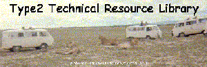

DOT3/DOT4 to DOT5 Brake Fluid Conversion
by Dave Barbieri
Since I don't do 'conversions', I wanted to talk to some of our brake vendors (TX & CA) and get my facts straight. Here's the procedure recommended:
- Use a turkey baster to suck all the old fluid out of the master cylinder reservoir. Fill the reservoir with rubbing alcohol. Get about 5 bottles; yer gonna need 'em. 8-P
- Bleed the system, just like you would normally. Keep bleeding each wheel cylinder/caliper until only rubbing alcohol comes out. When all you see is only clean, clear rubbing alcohol, you're thru with the flushing.
- Take all the brake lines loose at both ends. Use filtered, dry compressed air to blow out all alcohol. The lines must be free of all traces of alcohol.
- Remove the master cylinder and wheel cylinders/calipers. Disassemble each component, clean thoroughly with either hot soapy water/hot water rinse or with a commercial non-filming brake cleaner. Dry each part and reassemble using DOT5 brake fluid as lubricant.
- Components such as the combination valve will have alcohol in them from the flushing procedure. Blowing them out will be pretty touchy. Too much air and you 'blow out' the valve, too little and you don't get rid of the alcohol.
- Re-install all the parts, fill the reservoir with DOT5 fluid, and bleed as normal.
There's not complete agreement on how DOT5 reacts with DOT3/4. Some tech reps said it forms a gummy residue that affects brake action. Two stated that the DOT5 would simply 'flush out' any traces of alcohol/DOT3/4 during the bleeding process. Since there's not 100% agreement, (and I'm both anal-retentive and paranoid when it comes to brakes), I listed the full procedure.
Do you really, reeeelly wanna do this? DOT5 is typically used in heavy eqyuipment, military vehicles, and (some) antique vehicles. All share the same characteristic of sitting for long periods of time. DOT5 gets rid of any concern about moisture absorption while sitting idle.
DOT5 is expensive and a PITA; I think you'll spend a lot of time and $$, only to be disappointed with the actual performance gains.
